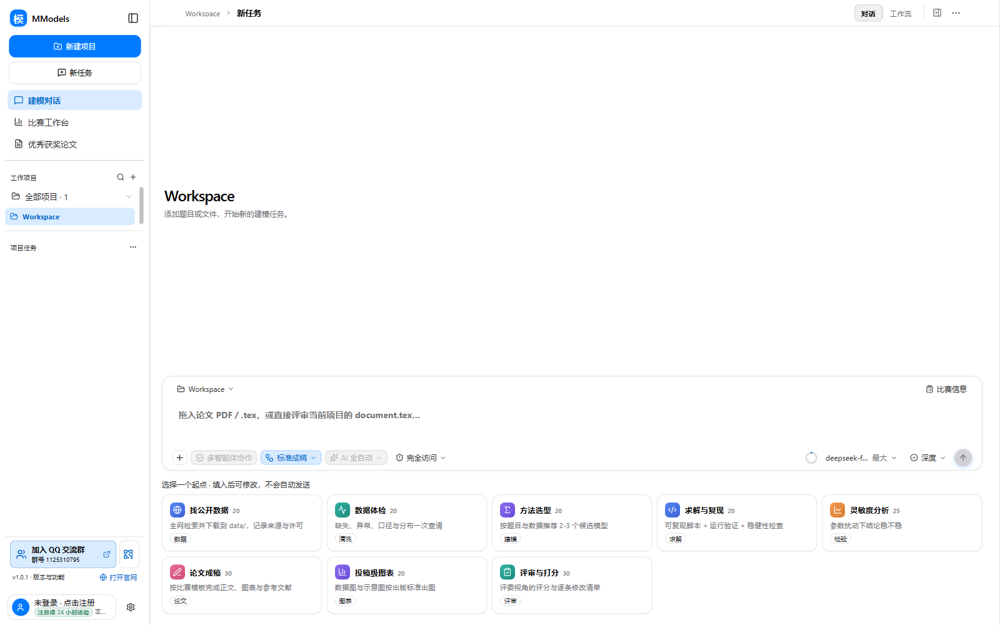
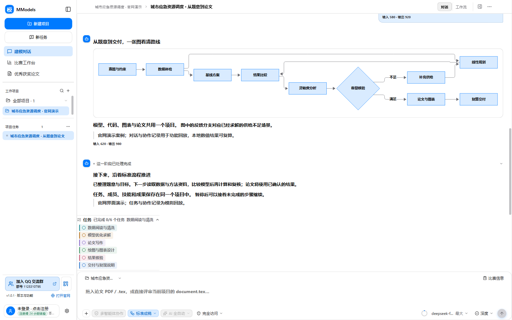
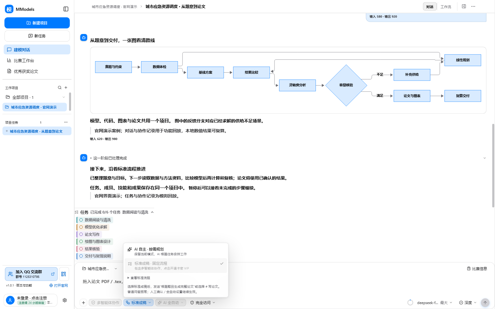
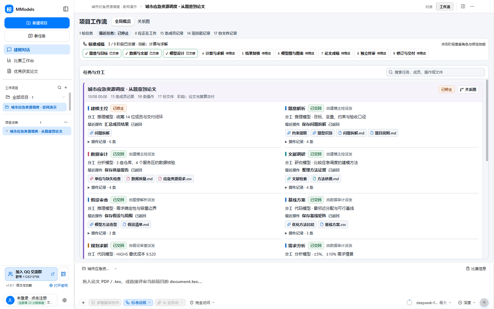
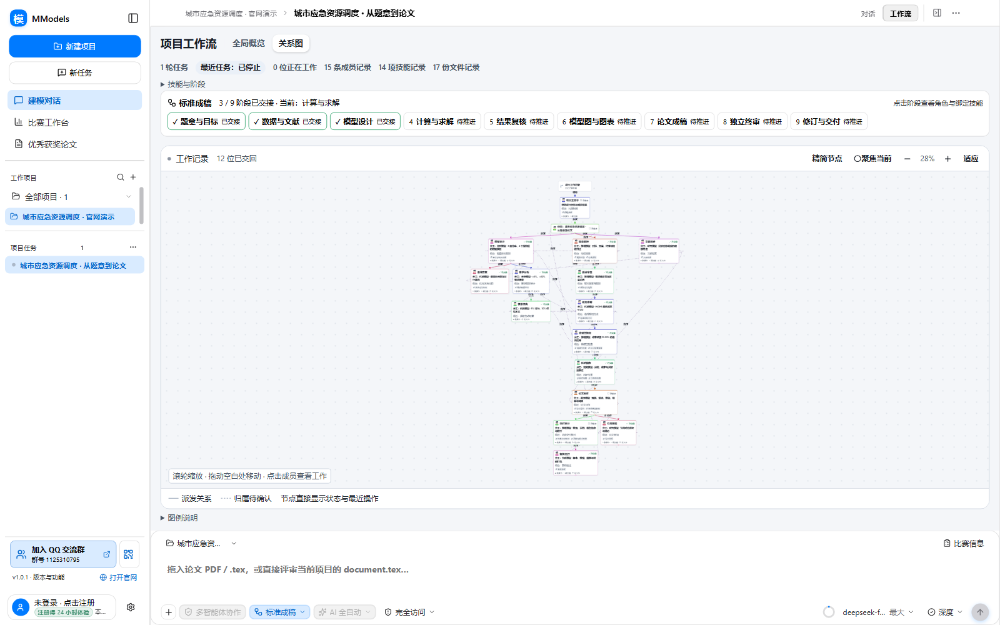
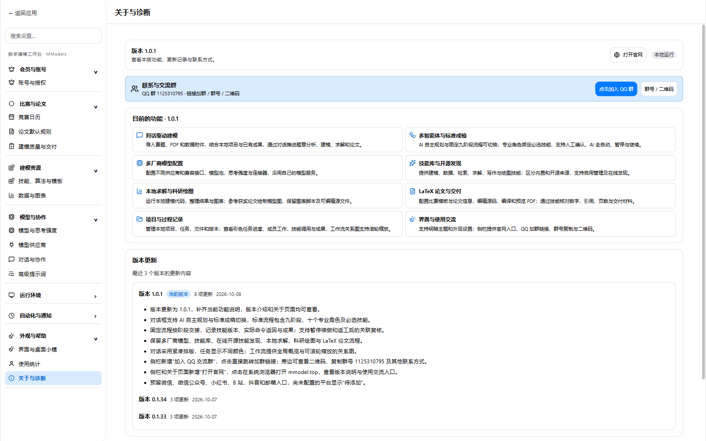
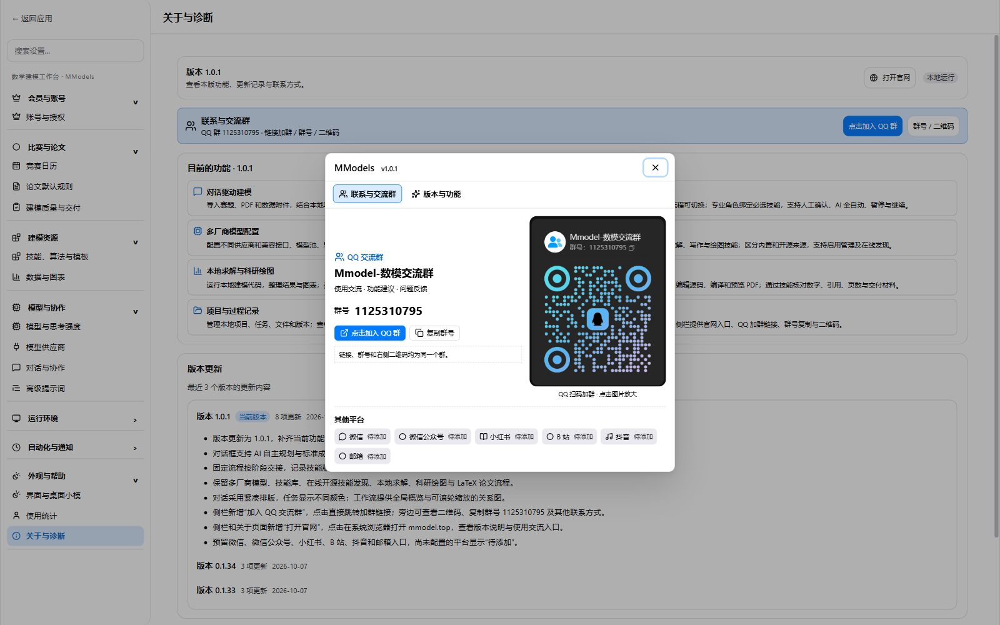
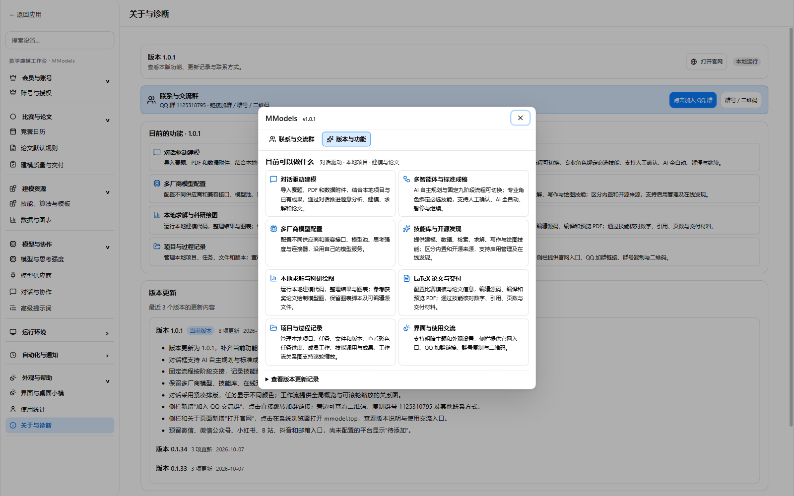

打开 QQ 官方加群页面。
当前版本 · v1.0.1 · 数据从桌面端目录生成
完整能力目录
这里不是宣传用的几张截图，而是当前版本实际内置的能力清单。搜索一个技能、算法、图表、连接器或论文模板，先看它解决什么问题、需要什么输入、会交付什么，再决定是否下载和升级。
目录由项目真实资源生成技能卡显示单次积分成本；卡密 VIP 不扣技能积分图表示例仅作结构参考，最终请用项目真实数据重绘
没有找到匹配项。试试换一个关键词，或清除场景筛选。
联系与交流群
Mmodel-数模交流群
赛题讨论、使用交流与版本更新。
在 QQ 中搜索群号加入。

点击图片放大原图。
其他平台 · 待添加
微信 · 微信公众号 · 小红书 · B站 · 抖音 · 邮箱
1.0.1 / 新版界面
用当前界面，看清怎么开始、怎么推进。
8 张 2026-10-08 新版截图。截图使用隔离演示项目，对话、任务和协作记录为模拟回放。点击图片查看原图。

查看原图 ↗新版建模工作台
从对话开始，项目、任务、官网与交流群入口集中在侧栏。

查看原图 ↗紧凑对话与彩色任务
完整宽度的消息区、折叠操作记录，以及按任务内容收紧的彩色进度。

查看原图 ↗AI 自主 / 标准成稿
对话框中切换按需规划或固定九阶段、十角色流程。

查看原图 ↗工作流全局概览
不必逐个点开节点，就能阅读成员分工、最近工作、技能和文件。

查看原图 ↗工作流关系图
紧凑节点展示交接关系；支持滚轮缩放、拖动与适应全图。

查看原图 ↗版本与官网入口
查看当前功能和更新记录，直接打开官网或加入 QQ 群。

查看原图 ↗三种加群方式
点击加群、复制群号、扫描原始二维码；其他平台暂时预留。

查看原图 ↗1.0.1 功能说明
在客户端中查看本版功能与历次更新。